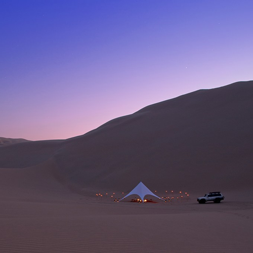
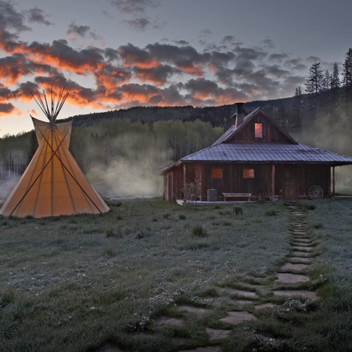
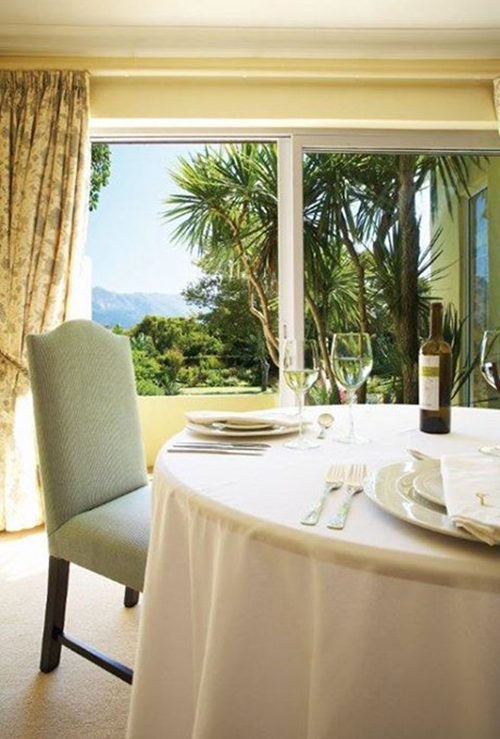

Свадьба – бесспорно является лучшим днем в жизни молодоженов. Но это всего один день – так мало времени, чтобы насладиться лучшим днем! Но есть возможность растянуть это время на одну, а то и на две недели. Финансы в данном вопросе играют немаловажную роль, поэтому каждый решает для себя сам, как провести медовый месяц. Мы же просто дадим совет, как нестандартно для России можно провести отпуск после того, как Вы поблистали в своем красивом подвенечном облачении. Чтобы время, проведенное вместе, было в радость обоим, путешествие надо потратить на то, что Вам обоим нравится – потягивать коктейли у бассейна, а может Вам хочется добавить немного адреналина к брызгам шампанского и лепесткам розы, лежащим возле Вашей кровати?
Можно выбрать путешествие далекое от стандартов. Кто из Ваших знакомых отмечал свой медовый месяц в деревушке недалеко от Марракеша в Марокко или скатывался с песчаных дюн в Перу? Почему бы не отправиться в путешествие в Австралию с ее прекрасными горизонтальными водопадами и не поплавать с китовыми акулами. А может нестандартный отдых в стандартной Турции – как на счет ночи в пещере или полет на параплане над городом? В прошлом один из самых опасных мест в мире, а ныне очень красивая Колумбия с комфортной температурой круглый год и зелеными склонами гор… Как на счет Мексики? Или подводная лодка в Фиджи?
Паракас, Перу
Хотите медовый месяц вдали от проторенных троп в наиболее отдаленных от России уголках? Наиболее известные места для такого время провождения – Мачу-Пикчу в Паракасе, Перу. На побережье Тихого океана, в трех часах к югу от Лимы, стоят прекрасные отели. Пять звезд предложат Вам невероятные кровати, бассейны и аппетитные блюда. Это так же отправная точка для лодочной поездки к островам Бальестас. Тут полно пингвинов и морских котиков. Можете захватить свое любимое одеяние и устроить фотосет. Совершите полет над таинственными геоглифами Наски или прокатитесь по гигантским песчаным дюнам. Так же это всем известное в США место для кайтсерфинга с возможностью обучения.
Скалистые Горы, Колорадо
Для высокогорного отдыха подойдет домик в скалистых горах, например в Дантон Хот-Спрингс. В этом месте в 19м веке стоял шахтерский городок и били горячие источники. Тут Вам будет предоставлена возможность попасть на экскурсии в стилистике Дикого Запада: прогулки на снегоступах, бег на лыжах, рыбалка, езда верхом, велосипедные прогулки и катание на собачьих упряжках – все зависит от времени года. Что может быть романтичнее?
Кейптаун, Южная Африка
Африка - лучшая для совершения смелых подвигов, например дайвинг с большими белыми акулами, который можно совмещать со спокойной роскошью (не без помощи огромного количества сортов вина), чем Кейптаун. Первым делом следует обратить внимание на знаменитую гору, вид на которую открывается из большей части города и расположена недалеко от известного отлея с частным роскошным бутиком среди садов и виноградников. В вечера полнолуния В сможете насладиться одновременным закат Солнца и восходом Луны. Вы также можете полетать на параплане с пика и поучавствовать в сафари.